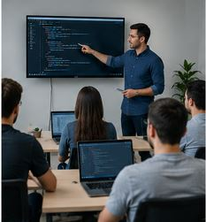

Desarrollo Web
Ofrecemos servicios de desarrollo web a medida, utilizando las últimas tecnologías para crear sitios web atractivos y funcionales.
En Tech Solutions, ofrecemos una amplia gama de servicios tecnológicos, incluyendo desarrollo web, consultoría en TI y soluciones de software personalizadas.

Ofrecemos servicios de desarrollo web a medida, utilizando las últimas tecnologías para crear sitios web atractivos y funcionales.

Nuestro equipo de expertos en TI proporciona asesoramiento estratégico para optimizar la infraestructura tecnológica de su empresa y mejorar la eficiencia operativa.

Desarrollamos soluciones tecnológicas a medida para satisfacer las necesidades específicas de su negocio y mejorar su competitividad en el mercado.
Brindamos soporte técnico confiable y rápido para garantizar que sus sistemas funcionen sin problemas y minimizar el tiempo de inactividad.
Si desea obtener más información sobre nuestros servicios o tiene alguna pregunta, no dude en ponerse en contacto con nosotros.
Contáctenos